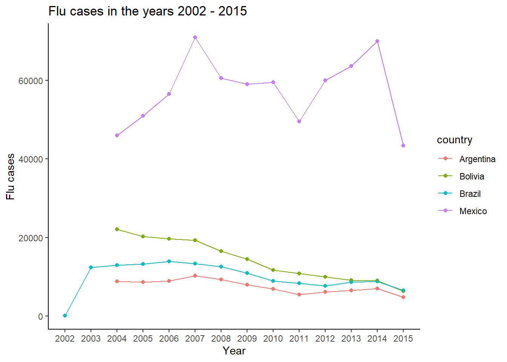
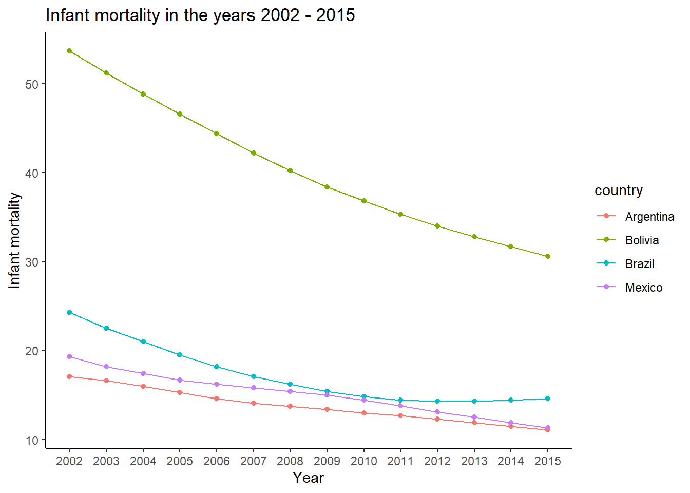

9 Working with DBeaver and SQL
library(tidyverse)
library(readxl)
library(dslabs)
library(here)
library(DBI)
# install.packages("RPostgres")
library(RPostgres)
First, I read in the flu, dengue and gapminder data.
flu <- read_csv(here("data/data_raw/flu_data.csv"), skip = 11)
dengue <- read_csv(here("data/data_raw/dengue_data.csv"), skip = 11)
gapminder <- read_builtin("gapminder")The flu and dengue data wasn’t tidy yet, so I solved that by using the pivot_longer command to create the column “country” and “cases” in each of the datasets. That way, each country, date and number of cases had its own column.
The gapminder dataset was already tidy.
dengue_tidy <- pivot_longer(data = dengue, cols = c("Argentina", "Bolivia", "Brazil", "India", "Indonesia", "Mexico", "Philippines", "Singapore", "Thailand", "Venezuela"), names_to = "country_d", values_to = "dengue_cases")
flu_tidy <- pivot_longer(data = flu, cols = c("Argentina", "Australia", "Austria", "Belgium", "Bolivia", "Brazil", "Bulgaria", "Canada", "Chile", "France", "Germany", "Hungary", "Japan", "Mexico", "Netherlands", "New Zealand", "Norway", "Paraguay", "Peru", "Poland", "Romania", "Russia", "South Africa", "Spain", "Sweden", "Switzerland", "Ukraine", "United States", "Uruguay"), names_to = "country_f", values_to = "flu_cases")
Next, I changed the flu and dengue data some more. I separated the Data column into the three columns “Year”, “Month” and “Day”. I also added a d or f after the column name “year”, so joining of the datasets in DBeaver will be possible later on.
In the gapminder dataset, I changed the column “year” to “year_g” to also make joining more easy later on in DBeaver.
flu_tidy <- separate(flu_tidy, Date, into = c("year_f", "month", "day"), sep = "-")
dengue_tidy<- separate(dengue_tidy, Date, into = c("year_d", "month", "day"), sep = "-")
flu_tidy$country_flu <- as.factor(flu_tidy$country_f)
flu_tidy$year <- as.numeric(flu_tidy$year_f)
dengue_tidy$country_dengue <- as.factor(dengue_tidy$country_d)
dengue_tidy$year <- as.numeric(dengue_tidy$year_d)
gapminder$country <- as.factor(gapminder$country)
dengue_tidy <- as.data.frame(dengue_tidy)
flu_tidy <- as.data.frame(flu_tidy)
dengue_tidy <- dengue_tidy %>% group_by(country_d, year_d) %>% summarise_each(funs(sum), dengue_cases)
flu_tidy <- flu_tidy %>% group_by(country_f, year_f) %>% summarise_each(funs(sum), flu_cases)
# Thanks to https://stackoverflow.com/questions/25089665/error-only-defined-on-a-data-frame-with-all-numeric-variables-with-ddply-on-lar for the summarise_each command :)
gapminder <- gapminder %>% rename(year_g = "year", country_g = "country")
gapminder$year_g <- as.character(gapminder$year_g)
Then I saved the three datasets as both .csv files and .rds files.
write.csv(flu_tidy, "Data//flu_data_tidy.csv", row.names = TRUE)
write.csv(dengue_tidy, "Data//dengue_data_tidy.csv", row.names = TRUE)
write.csv(gapminder, "Data//gapminder.csv", row.names = TRUE)
saveRDS(flu_tidy, file = "flu_data_tidy.rds")
saveRDS(dengue_tidy, file = "dengue_data_tidy.rds")
saveRDS(gapminder, file = "gapminder.rds")
Next, I inserted the tables into the “workflowsdb” database in DBeaver.
con <- dbConnect(RPostgres::Postgres(),
dbname = "workflowsdb",
host = "localhost",
port = "5432",
user = "postgres",
password = "SQL22")
dbWriteTable(con, "flu_tidy", flu_tidy)
dbWriteTable(con, "dengue_tidy", dengue_tidy)
dbWriteTable(con, "gapminder", gapminder)
dbDisconnect(con)
Then I inspected the contents of the datasets in DBeaver and in R.
# Inspecting the flu_tidy dataset
flu_tidy %>% arrange(desc(flu_cases)) %>% head()## # A tibble: 6 × 3
## # Groups: country_f [3]
## country_f year_f flu_cases
## <chr> <chr> <dbl>
## 1 South Africa 2014 155577
## 2 South Africa 2009 150344
## 3 Canada 2009 141118
## 4 South Africa 2013 140671
## 5 United States 2009 139394
## 6 South Africa 2012 136519flu_tidy$flu_cases %>% min(flu_tidy$flu_cases, na.rm = TRUE)## [1] 106flu_tidy$flu_cases %>% max(flu_tidy$flu_cases, na.rm = TRUE)## [1] 155577# Inspecting the dengue_tidy dataset
dengue_tidy %>% arrange(desc(dengue_cases)) %>% head()## # A tibble: 6 × 3
## # Groups: country_d [3]
## country_d year_d dengue_cases
## <chr> <chr> <dbl>
## 1 Venezuela 2010 27.8
## 2 Venezuela 2014 22.8
## 3 Thailand 2013 17.3
## 4 Argentina 2009 16.7
## 5 Venezuela 2009 15.8
## 6 Venezuela 2013 15.7dengue_tidy$dengue_cases %>% min(dengue_tidy$dengue_cases, na.rm = TRUE)## [1] 0.059dengue_tidy$dengue_cases %>% max(dengue_tidy$dengue_cases, na.rm = TRUE)## [1] 27.847# Inspecting the gapminder dataset
gapminder$infant_mortality %>% min(gapminder$infant_mortality, na.rm = TRUE)## [1] 1.5gapminder$infant_mortality %>% max(gapminder$infant_mortality, na.rm = TRUE)## [1] 276.9gapminder$life_expectancy %>% min(gapminder$life_expectancy, na.rm = TRUE)## [1] 13.2gapminder$life_expectancy %>% max(gapminder$life_expectancy, na.rm = TRUE)## [1] 83.9gapminder %>% select(country_g, year_g, life_expectancy) %>% arrange(desc(life_expectancy)) %>% head## country_g year_g life_expectancy
## 1 Hong Kong, China 2016 83.90
## 2 Hong Kong, China 2015 83.73
## 3 Hong Kong, China 2014 83.56
## 4 Hong Kong, China 2013 83.38
## 5 Iceland 2014 83.30
## 6 Iceland 2015 83.30gapminder %>% select( country_g, year_g, infant_mortality) %>% arrange(desc(infant_mortality)) %>% head()## country_g year_g infant_mortality
## 1 Yemen 1963 276.9
## 2 Yemen 1964 270.7
## 3 Yemen 1961 269.2
## 4 Yemen 1962 263.7
## 5 Yemen 1965 263.6
## 6 Yemen 1966 256.0
In DBeaver, I also inspected the data, performed some joins and exported a joined table to R. The table is called “Joined_table.csv”.
DBeaver code
After reading in the data, I removed the rows “year_d”, “year_g”, “country_d” and “country_g”. These rows were redundant, seeing as we already have the rows “year_f” and “country_f” from the flu dataset.
joined_table <- read.csv(here("Data/Joined_table.csv"))
joined_table <- joined_table %>% select(country_f:region, -(country_d:year_d))
joined_table <- joined_table %>% select(country_f:region, -(country_g:year_g))
joined_table <- joined_table %>% rename(country = "country_f", year = "year_f")
Then I performed some desriptive statistics with this dataset and made some visualisations.
joined_table %>% summary()## country year flu_cases dengue_cases
## Length:406 Min. :2002 Min. : 106 Min. : 0.073
## Class :character 1st Qu.:2005 1st Qu.: 3302 1st Qu.: 1.508
## Mode :character Median :2008 Median : 9214 Median : 4.303
## Mean :2008 Mean : 23372 Mean : 5.001
## 3rd Qu.:2012 3rd Qu.: 32278 3rd Qu.: 7.872
## Max. :2015 Max. :155577 Max. :16.739
## NA's :72 NA's :354
## infant_mortality life_expectancy fertility population
## Min. : 2.000 Min. :52.50 Min. :1.150 Min. : 3324096
## 1st Qu.: 3.825 1st Qu.:74.10 1st Qu.:1.430 1st Qu.: 8949130
## Median : 6.150 Median :78.30 Median :1.810 Median : 21811339
## Mean :10.558 Mean :76.61 Mean :1.876 Mean : 50741686
## 3rd Qu.:13.600 3rd Qu.:80.70 3rd Qu.:2.090 3rd Qu.: 52687274
## Max. :54.700 Max. :83.20 Max. :3.980 Max. :321773631
##
## gdp continent region
## Min. :7.214e+09 Length:406 Length:406
## 1st Qu.:5.970e+10 Class :character Class :character
## Median :2.539e+11 Mode :character Mode :character
## Mean :9.119e+11
## 3rd Qu.:6.578e+11
## Max. :1.174e+13
## NA's :117joined_table %>% group_by(country) %>%
ggplot(aes(x = year, y = dengue_cases, colour = country)) +
geom_point() +
geom_line() +
theme_classic() +
scale_x_continuous(breaks = seq(2002, 2015, 2))+
labs(title = "Dengue cases in the years 2002 - 2015",
x = "Year",
y = "Dengue cases")joined_table %>% group_by(country) %>% filter(flu_cases >= 10000) %>%
ggplot(aes(x = year, y = flu_cases, colour = country)) +
geom_point() +
geom_line() +
theme_classic() +
scale_x_continuous(breaks = seq(2002, 2015, 2))+
labs(title = "Flu cases in the years 2002 - 2015",
x = "Year",
y = "Flu cases")
joined_table %>% group_by(country) %>% filter(infant_mortality >= 10) %>%
ggplot(aes(x = year, y = infant_mortality, colour = country)) +
geom_point() +
geom_line() +
theme_classic() +
scale_x_continuous(breaks = seq(2002, 2015, 2)) +
labs(title = "Infant mortality in the years 2002 - 2015",
x = "Year",
y = "Infant mortality")